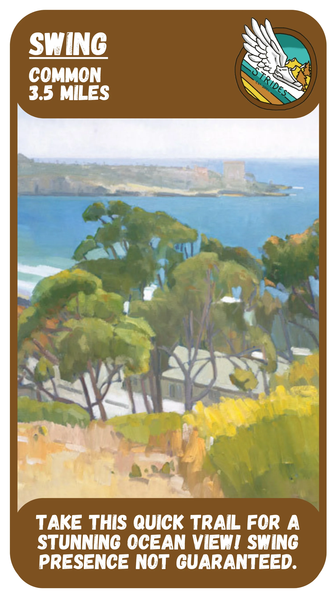
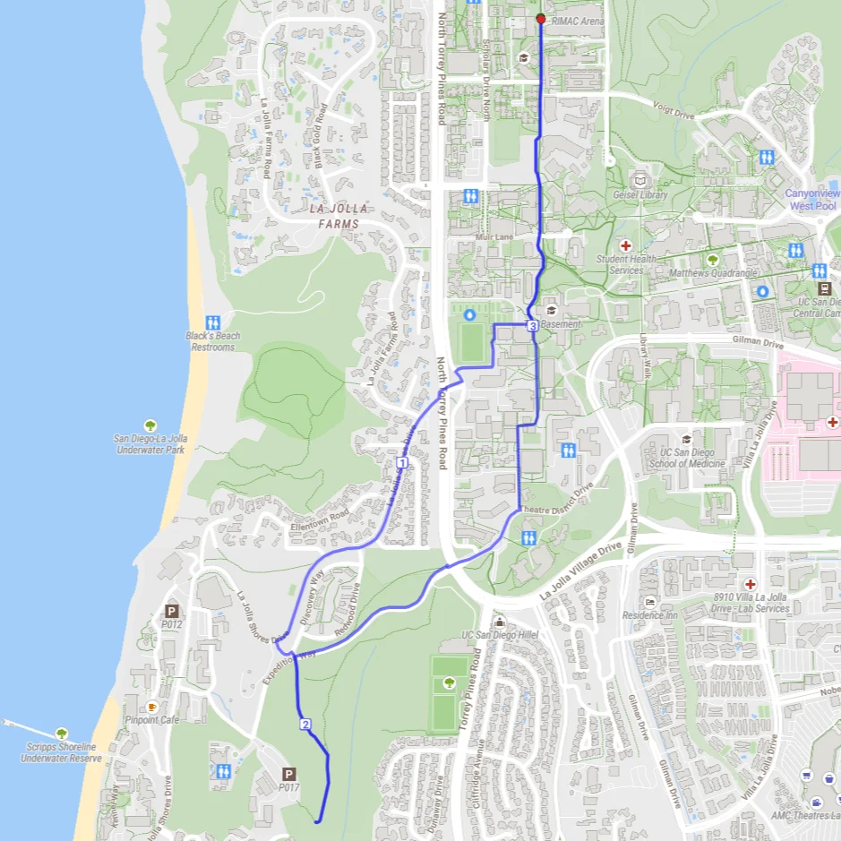
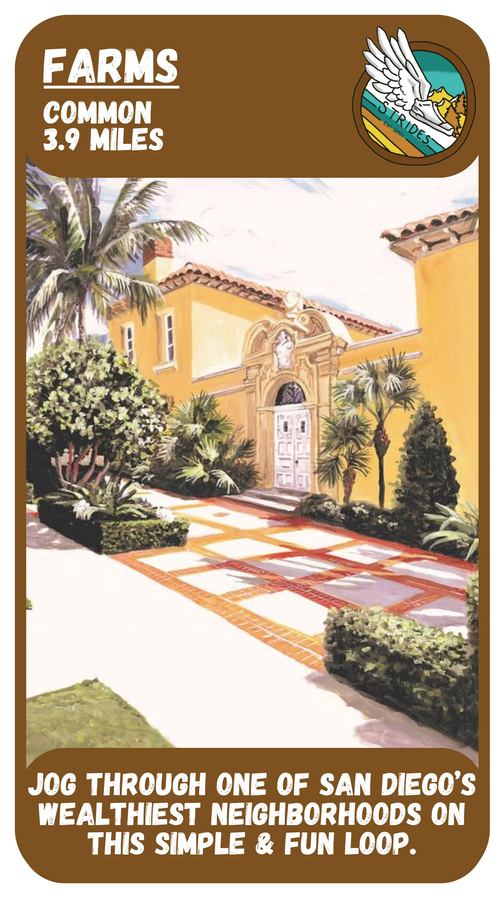
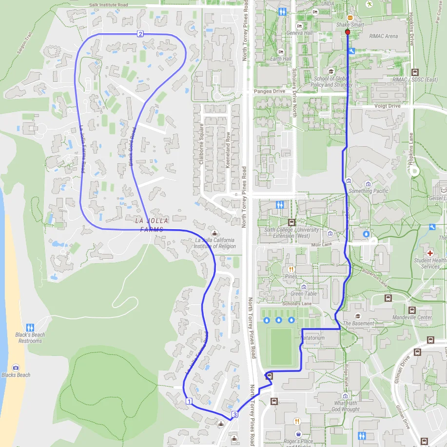
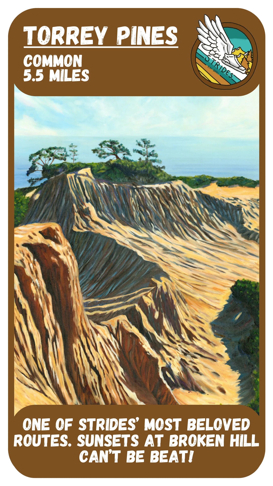
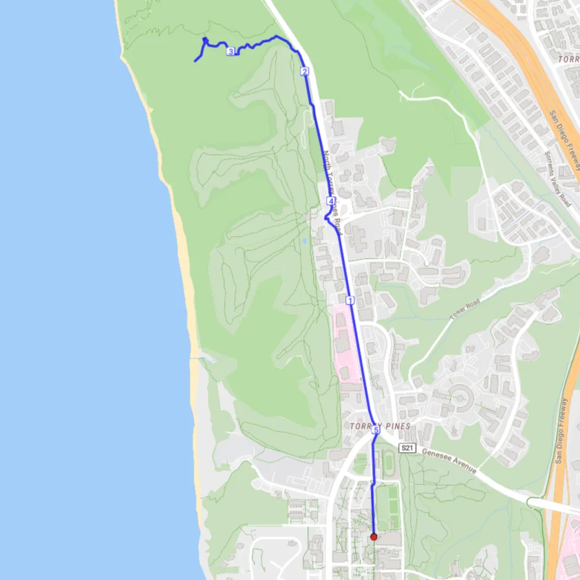
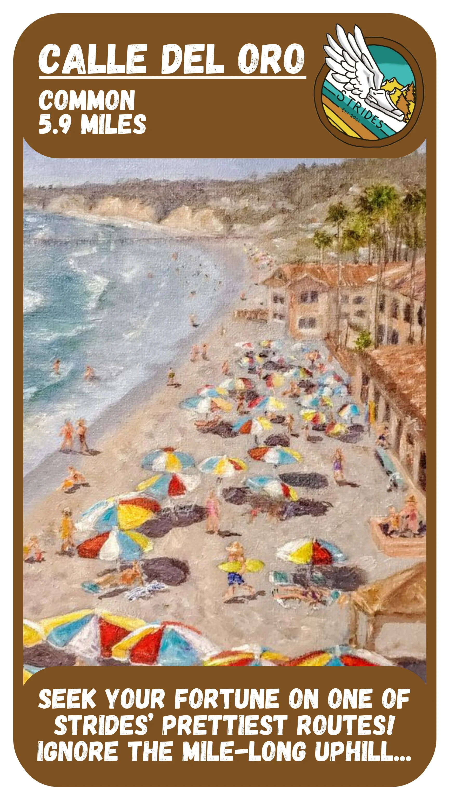
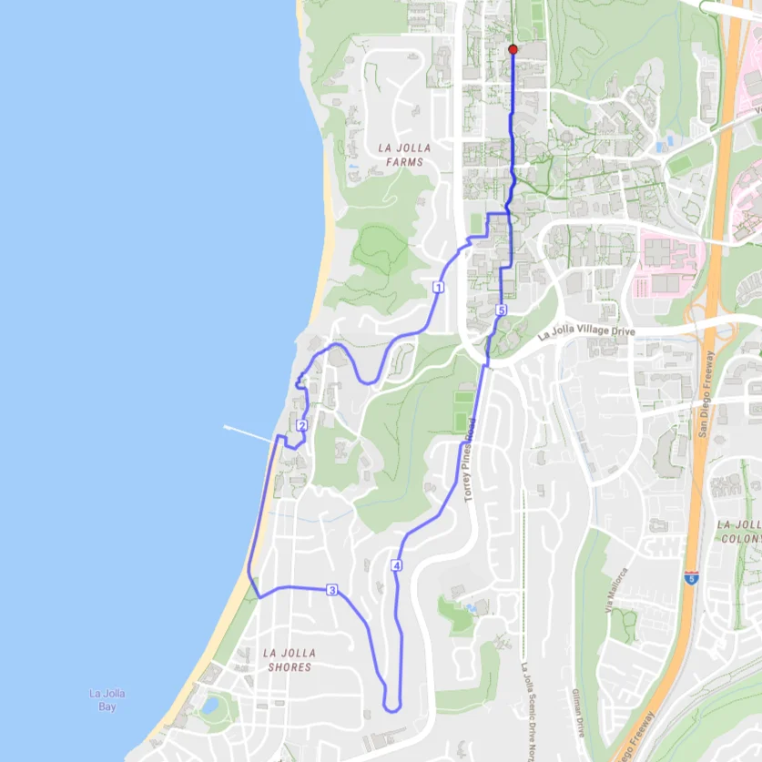
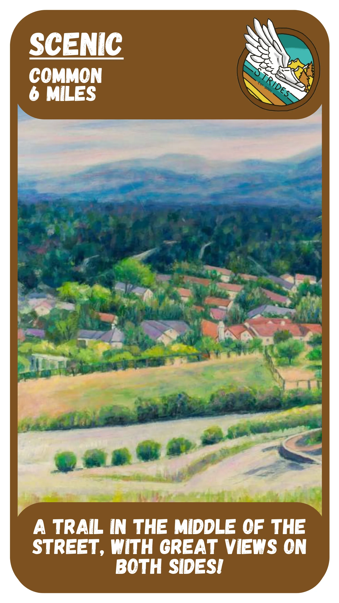
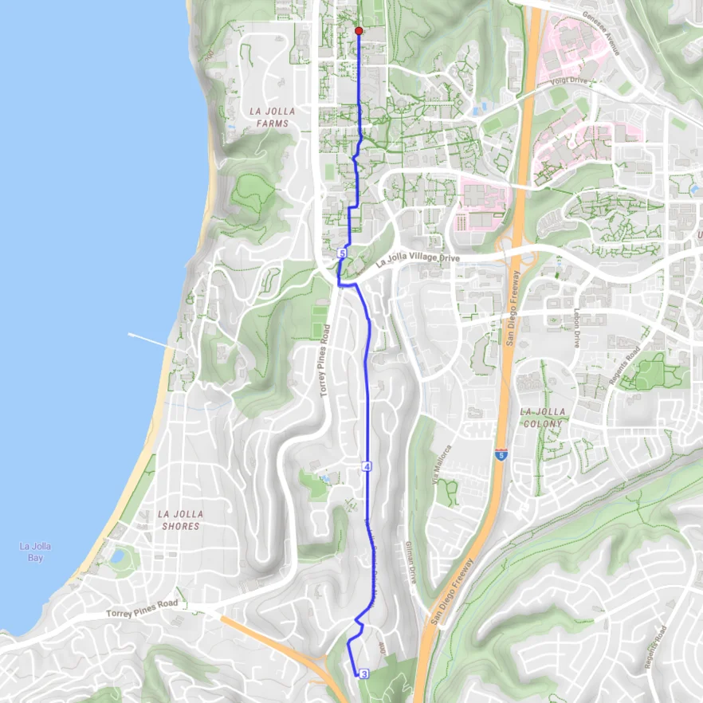

A fun little trail near Birch Aquarium that’ll reward you with a great view of the ocean! The swing itself is often stolen just as fast as it’s put up, so consider yourself lucky if you see it!


A safe, simple and satisfying loop that passes by some of the houses we’ll all be living in right after we graduate. This route is best buds with Swing, and we often pair them together!


A straightforward out-and-back, ending with a windy trail to one of the most beautiful views in our route collection. While school’s in session, the club never goes a week without running TP.


It’s no surprise that the 2x winner of Route Madness is such a gorgeous and exciting route. Jumping in the water is always an option, but beware of the mile-long ascent to get back to UCSD!


Out-and-back that takes you on a flat trail south of campus with cool views of La Jolla on both sides! Interesting characters (and animals) can sometimes be found at the turnaround point.
